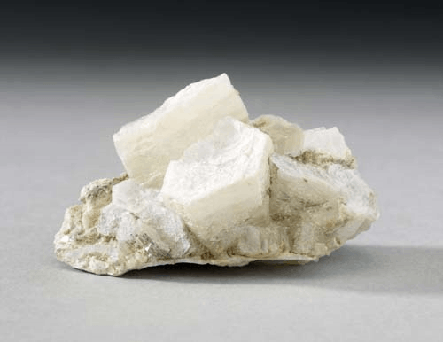
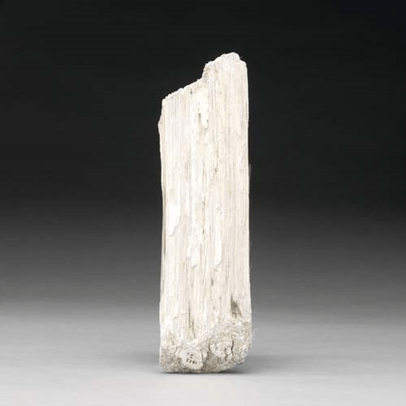

Brucite - Mg(OH)2
Hydroxides



Habit: Crystals tabular, often subparallel aggregates of plates. Massive, foliated; fibrous; rarely fine granular. White, pale green, gray, blue. Transparent, waxy to vitreous/pearly.
Environment: Typically forms as a low-temperature Hydrothermal vein mineral in serpentine and chlorite and dolomite schists.
Etymology: Named for Archibald Bruce (1777-1818), an American mineralogist.
Brucite has such a high melting point it is used to line kilns.